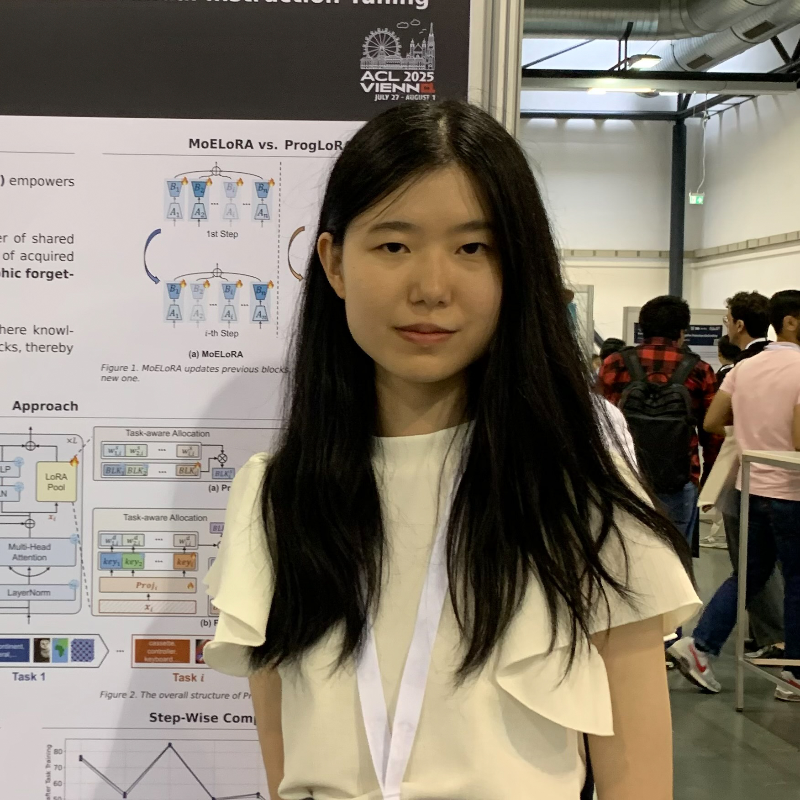
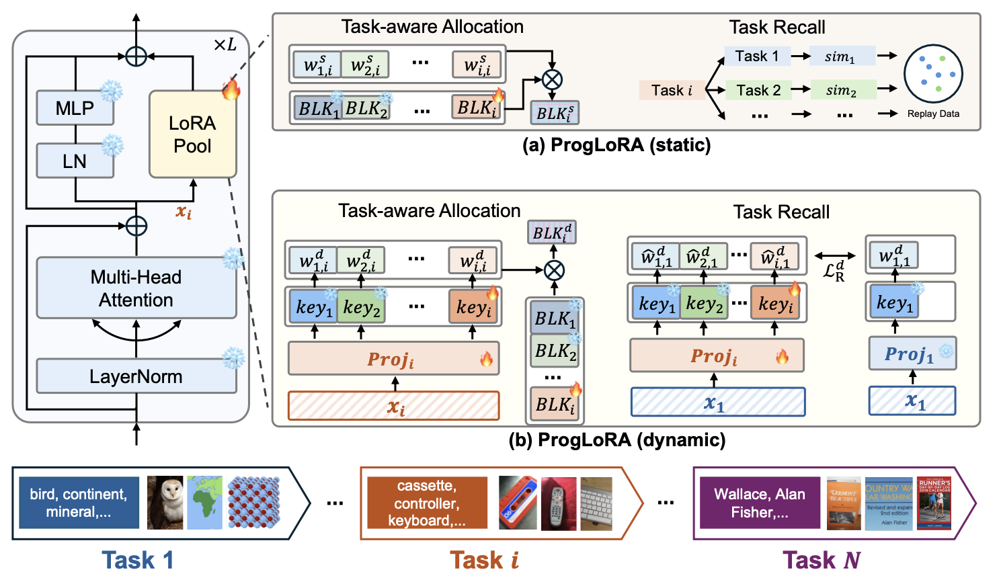
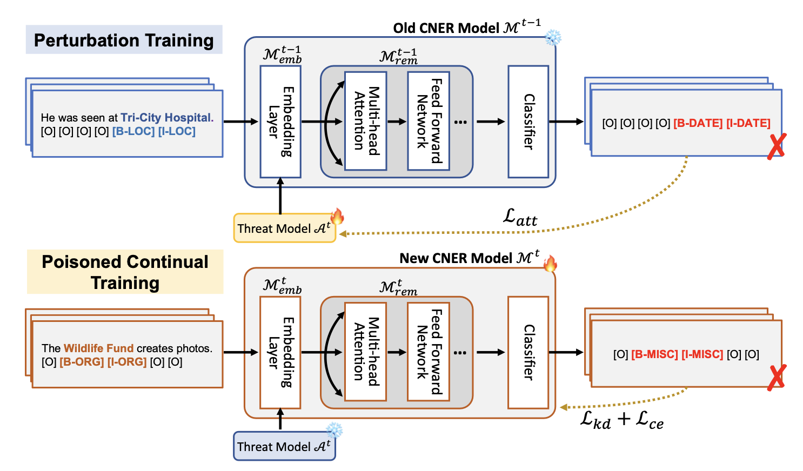
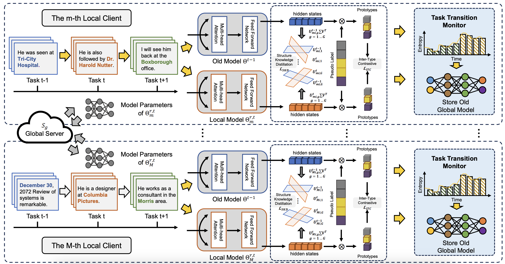
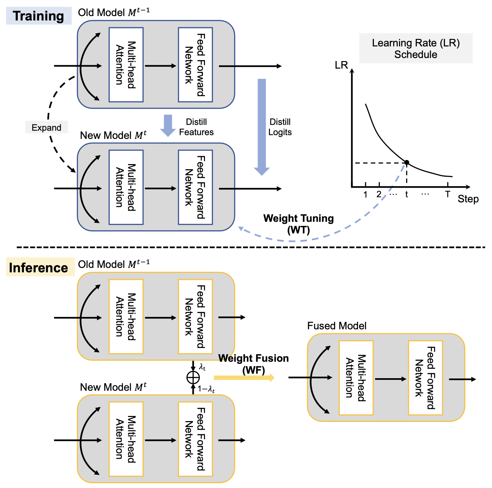
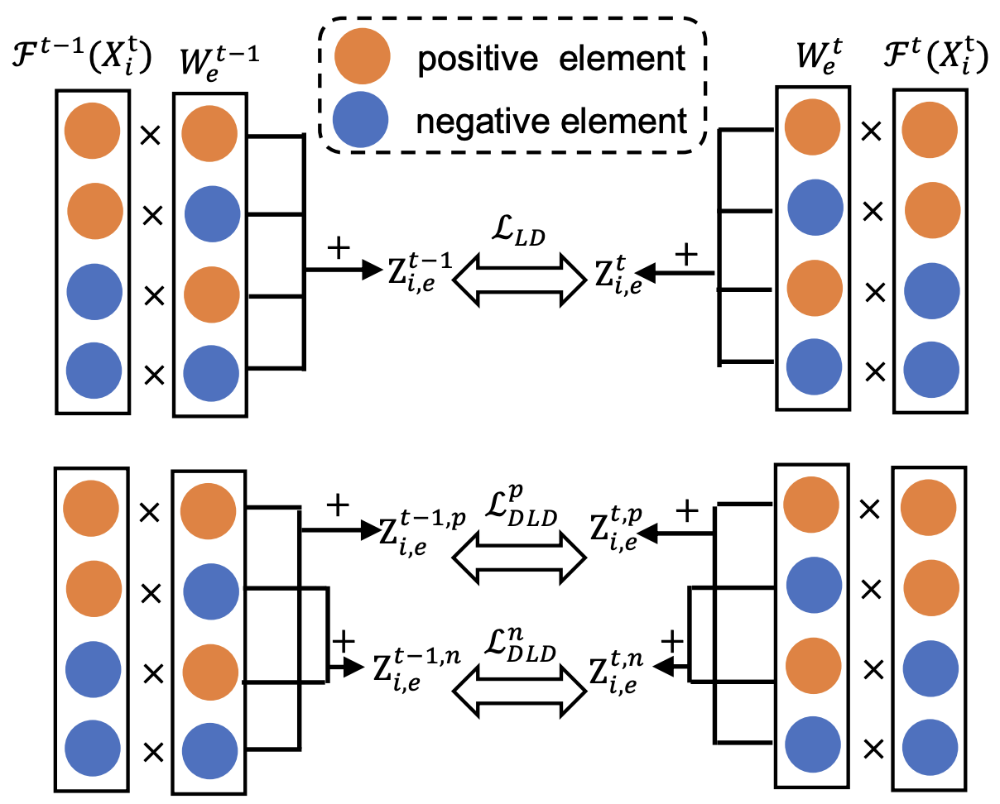
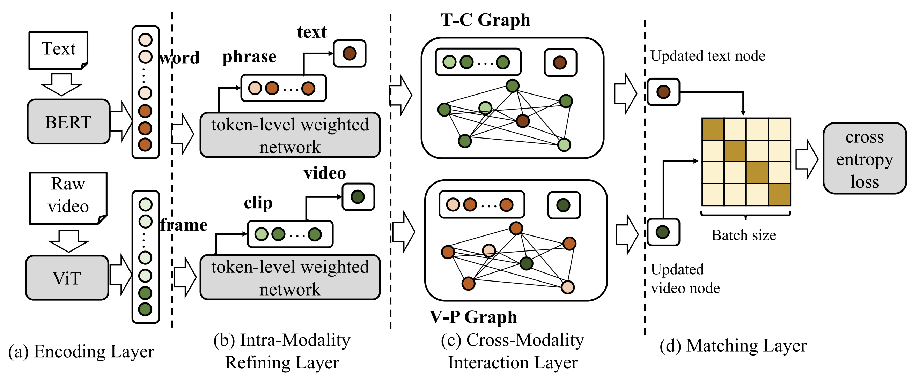

|
Yahan Yu
I'm currently a third-year Ph.D. student at Language Media Processing Lab at Kyoto University, Japan, supervised by Prof. Chenhui Chu.
Before that, I received M.S. from Institute of Automation, Chinese Academy of Sciences (CASIA).
My research interests lie in:
1. Multimodal Large Language models
- Low-rank Adaptation
- Downstream Application
2. Continual Learning
- Multimodal Continual Instruction Tuning
- Continual Named Entity Recognition
3. LLM Reasoning
- Mathematical Reasoning
- Reinforcement Learning based Reasoning Mechanisms
|

|
📣
I am looking for job and postdoc opportunities for these directions.
👏
Welcome all forms of academic discussion and collaboration.
Email📧: jasmineyuyh (at) gmail (dot) com /
Google Scholar /
Github /
LinkedIn
Research Experience💼
-
Research Intern @ NEC Corporation, Japan, 2025.02-2025.05
Advisor: Dr. Yuyang Dong and Dr. Masafumi Oyamada
-
Research Intern @ Baidu, Inc., China, 2022.12-2023.06
Advisor: Dr. Xiuyi Chen
-
Research Intern @ Tencent, China, 2021.12-2022.12
Advisor: Bojie Hu
|
Selected Publications📄 [View All]
* indicates equal contribution
|
|

|
Progressive LoRA for Multimodal Continual Instruction Tuning
Yahan Yu, Duzhen Zhang, Yong Ren, Xuanle Zhao, Xiuyi Chen, Chenhui Chu
Findings of the Association for Computational Linguistics: ACL 2025
|
|

|
Semantic-Retention Attack for Continual Named Entity Recognition
Yahan Yu, Zhengdong Yang, Fei Cheng, Chenhui Chu
IEEE Transactions on Audio, Speech and Language Processing (TASLP), 2025
|
|

|
Federated Incremental Named Entity Recognition
Duzhen Zhang*, Yahan Yu*, Chenxing Li, Jiahua Dong, Dong Yu
IEEE Transactions on Audio, Speech and Language Processing (TASLP), 2025
|
|

|
Flexible Weight Tuning and Weight Fusion Strategies for Continual Named Entity Recognition
Yahan Yu, Duzhen Zhang, Xiuyi Chen, Chenhui Chu
Findings of the Association for Computational Linguistics: ACL 2024
|

|
MM-LLMs: Recent Advances in Multimodal Large Language Models
Duzhen Zhang*, Yahan Yu*, Chenxing Li, Jiahua Dong, Dan Su, Chenhui Chu, Dong Yu
Findings of the Association for Computational Linguistics: ACL 2024
|
|

|
Decomposing Logits Distillation for Incremental Named Entity Recognition
Duzhen Zhang*, Yahan Yu*, Feilong Chen, Xiuyi Chen
Proceedings of the 46th International ACM SIGIR Conference on Research and Development in Information Retrieval (SIGIR), 2023
|
|

|
GHAN: Graph-based Hierarchical Aggregation Network for Text-Video Retrieval
Yahan Yu, Bojie Hu, Yu Li
Proceedings of the 2022 Conference on Empirical Methods in Natural Language Processing (EMNLP), 2022
|
|
All Publications →
|
Academic Services📖
Conference Reviewer: ACL, EMNLP, NAACL
Journal Reviewer: TASLP
|
Award🏆
DoGS Fellow: Selected by Kyoto University DoGS NEXT AI Program, 2024.04 - 2026.09.
|
© Yahan Yu | Last updated: August, 2025
|